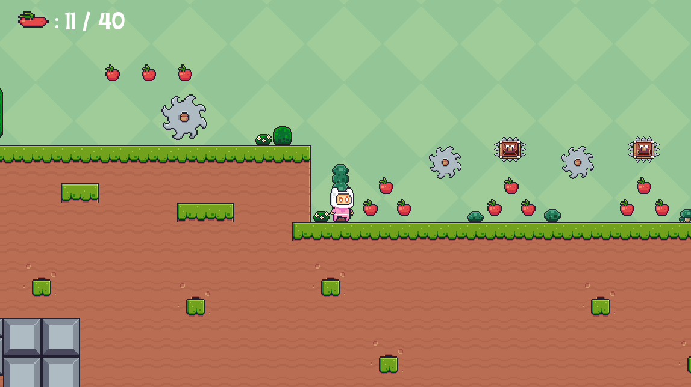
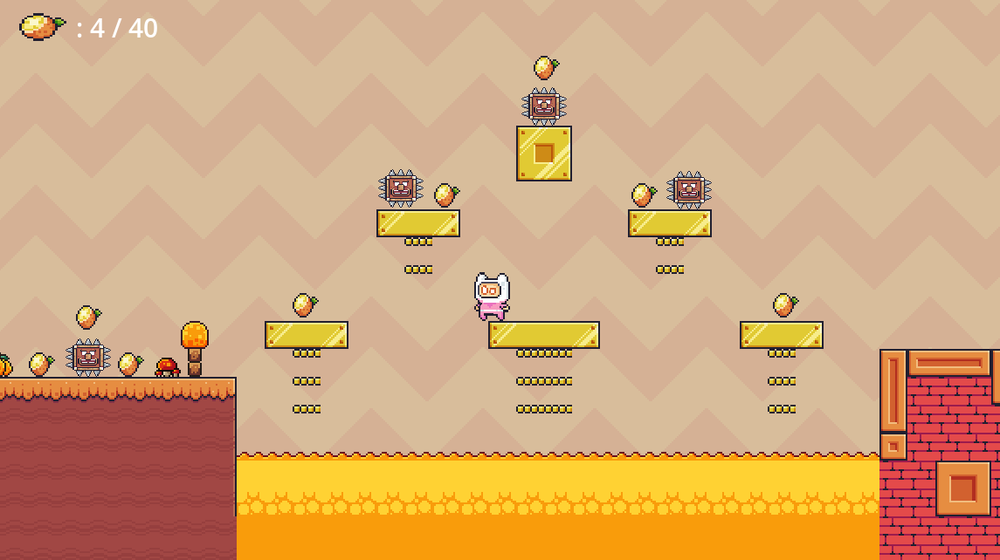

۳. روایت و دنیاسازی
خلاصه داستان: مأموریت پینکو
داستان "Rust and Roots" یک قصه ساده اما قدرتمند از امید و فداکاری است. در مرکز دنیای پینکو، "درخت زندگی" قرار دارد که ناگهان شروع به پژمردن میکند و حیات کل سرزمین را به خطر میاندازد. پینکو، قهرمان کوچک و مصمم ما، درمییابد که تنها راه نجات، جمعآوری میوههای جادویی از "سرزمینهای رنگارنگ" است. این سرزمینها، که اکنون بقایای یک تمدن صنعتی و متروکه هستند، توسط نگهبانان مکانیکی محافظت میشوند. پینکو باید به تنهایی وارد این دنیای پرخطر شود و با جمعآوری میوه های حیاتبخش، نه تنها درخت، بلکه آینده دنیای خود را نجات دهد.
شخصیتها: قهرمان و نگهبانان
قهرمان داستان: پینکو (Pinko): پینکو شخصیتی کنجکاو، شجاع و خوشقلب است. با وجود جثه کوچکش، ارادهای بزرگ برای نجات خانهاش دارد. ظاهر دوستداشتنی او با لباس صورتی و کلاه سفیدش، در تضاد با دنیای خشن و مکانیکی اطرافش، نمادی از امید و سرزندگی در دل ناامیدی است.

مهاجمان مکانیکی: کله تیغی (Spike Head): این موجودات، مهاجمان رده اول سرزمین رنگارنگ هستند. آنها خودکار را بر سر راه بازیکن قرار میدهند و عبور بازیکن را چالش برانگیز میکنند. با اینکه خطرناک به نظر میرسند، اما نقطه ضعف دارند و با شلیکهای به موقع پینکو از بین میروند و منفجر میشوند.
تلهها: تیغه چرخنده (Saw Blade): این تیغهها بخشی از سیستم دفاعی قدیمی و تخریبناپذیر این سرزمین هستند. آنها دشمنانی بیفکر و بیرحماند که فقط یک الگوی حرکتی را تکرار میکنند. تنها راه مقابله با آنها، جاخالی دادن و زمانبندی دقیق است.
دنیاسازی: سرزمینهای رنگارنگ
دنیای بازی، یک تضاد بصری زیبا بین طبیعت و صنعت را به تصویر میکشد و نام بازی ("ریشه و زنگار") نیز از همین تضاد الهام گرفته شده است.
مرحله اول: جنگل سرسبز
ماجراجویی پینکو از یک منطقه سرسبز و پر از حیات آغاز میشود. در این مرحله، سکوهای پوشیده از چمن، درختان و آب روان دیده میشود. با این حال، اولین نشانههای "زنگار" با حضور دشمنان مکانیکی و پلتفرمهای فلزی نمایان میشود که نشان میدهد این تهدید در حال نفوذ به طبیعت است.
مرحله دوم: درههای گرم
در این مرحله، پالت رنگی به سمت زرد، نارنجی و قرمزهای گرم متمایل میشود که نشاندهنده یک محیط خشکتر و پاییزی است. سازههای آجری و سکوهای طلاییرنگ، نشاندهنده جلوه های رنگی این بازی میباشند. چالشها در این مرحله افزایش یافته و دشمنان در مکانهای دشوارتری قرار گرفتهاند.
